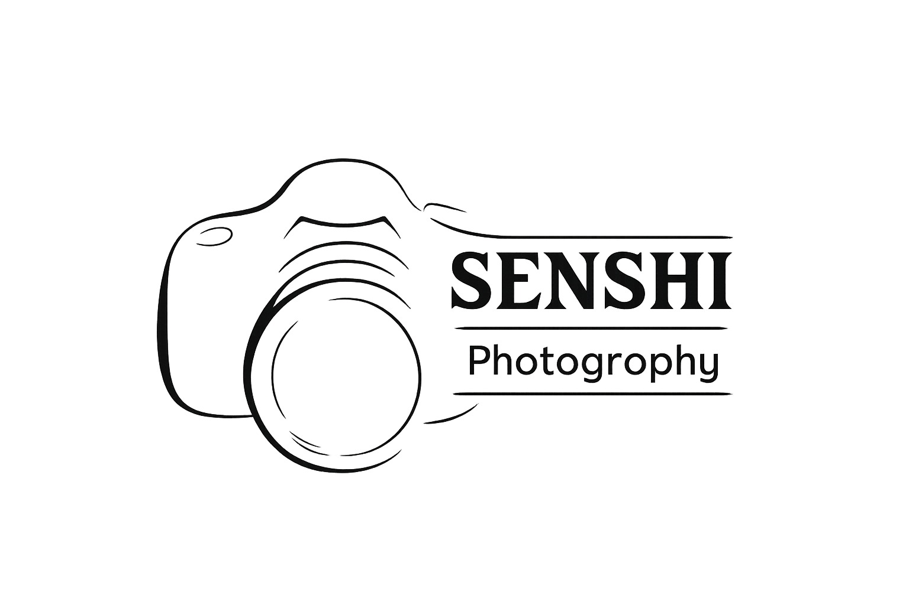

Visão Geral do Projeto
O "Senshi Fotografia" é um site de portfólio moderno construído com tecnologias de ponta. Ele serve tanto como uma vitrine pública para seus trabalhos de fotografia quanto como uma plataforma de gerenciamento de conteúdo privada para você, o administrador.
Tecnologias e Arquitetura
- Framework: Next.js 14+ com App Router. Isso permite uma renderização híbrida (servidor e cliente) e o uso de funcionalidades modernas como Server Actions.
- Interface do Usuário (UI): React com a biblioteca de componentes shadcn/ui e estilização feita com Tailwind CSS, resultando em um design limpo, responsivo e facilmente customizável.
- Lógica de Backend: Implementada através de Next.js Server Actions, simplificando a comunicação entre cliente e servidor sem necessidade de uma API REST tradicional.
- Armazenamento de Dados: Atualmente, o projeto utiliza sistema de arquivos local para persistir dados (JSON) e armazenar as imagens enviadas.
- Sistema de Upload: O upload de imagens é realizado utilizando Form Data (multipart/form-data), garantindo envio eficiente de arquivos.
- Evolução Planejada: Na próxima atualização, o sistema de upload será migrado para um banco de dados MySQL, trazendo maior robustez e escalabilidade.
Estrutura de Diretórios (Inferida)
/
├── src/
│ ├── app/
│ │ ├── api/
│ │ │ └── images/[...slug]/route.ts # Rota para servir imagens
│ │ ├── (public)/
│ │ │ ├── layout.tsx # Layout principal (header, footer)
│ │ │ ├── page.tsx # Página Inicial (Home)
│ │ │ └── portfolio/
│ │ │ └── page.tsx # Página do Portfólio
│ │ ├── (admin)/
│ │ │ ├── manage-content/
│ │ │ │ └── page.tsx # Página de Gerenciamento
│ │ │ └── login/
│ │ │ └── page.tsx # Página de Login
│ │ └── layout.tsx # Layout raiz
│ │
│ ├── components/
│ │ ├── ui/ # Componentes do shadcn/ui
│ │ ├── Header.tsx # Cabeçalho
│ │ ├── Footer.tsx # Rodapé
│ │ ├── ContactForm.tsx # Formulário de Contato (WhatsApp)
│ │ └── ...
│ │
│ ├── lib/
│ │ ├── actions.ts # Server Actions
│ │ ├── auth.ts # Autenticação
│ │ ├── data.ts # Leitura/Escrita JSON
│ │ └── utils.ts # Funções utilitárias
│ │
│ └── data/
│ └── portfolio.json # Armazenamento de dados atual
│
├── public/
│ └── ... (imagens estáticas, favicon, etc.)
│
└── .env.local # Variáveis de ambiente
Análise Detalhada das Funcionalidades
1. Páginas Públicas (src/app/(public)/)
- Home (page.tsx): seções principais (Herói, Sobre Mim, Depoimentos, Portfólio).
- Contato: formulário que gera link direto para WhatsApp usando react-hook-form + zod.
- Portfólio (portfolio/page.tsx): galerias com filtro por categoria (Tabs), layout tipo masonry e modal para visualização ampliada.
2. Área Administrativa (src/app/(admin)/)
- Login: formulário simples, autenticação via Server Action.
- Gerenciamento (manage-content/page.tsx):
- Editar Home (título, subtítulo, imagem).
- Editar "Sobre Mim" (texto + imagem).
- Gerenciar Galerias: criar categorias, fazer upload de fotos via Form Data, validação de limite (50MB), editar ou remover fotos/categorias.
- Gerenciar Depoimentos: upload de imagens (prints), com opções de edição e remoção.
3. Lógica do Servidor (src/lib/)
- actions.ts: funções async marcadas com "use server" (addCategory, removePhoto, updateHeroContent, login, etc.).
- data.ts: leitura/escrita em portfolio.json.
- Upload de Imagens: Recebido via Form Data (multipart/form-data), salvo no servidor como arquivo físico (.png, .webp, etc.), e o caminho é registrado no JSON.
- api/images/[...slug]/route.ts: serve as imagens do diretório privado, sem expor o caminho real.
